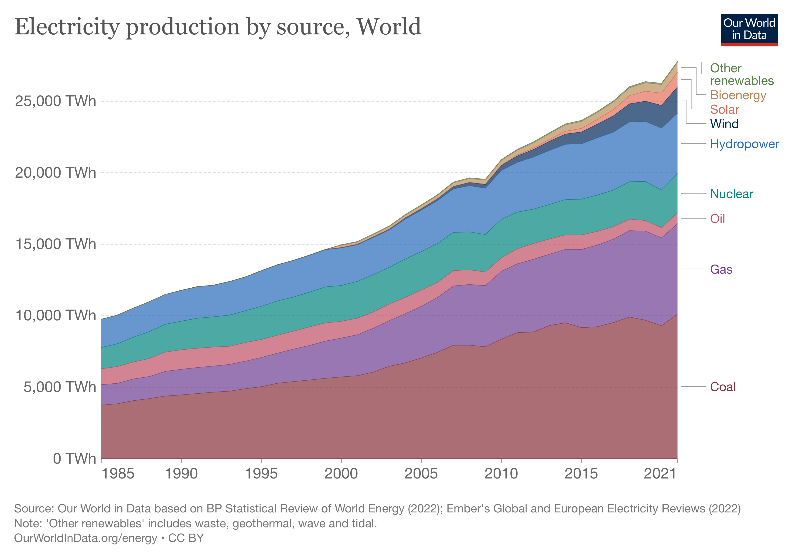
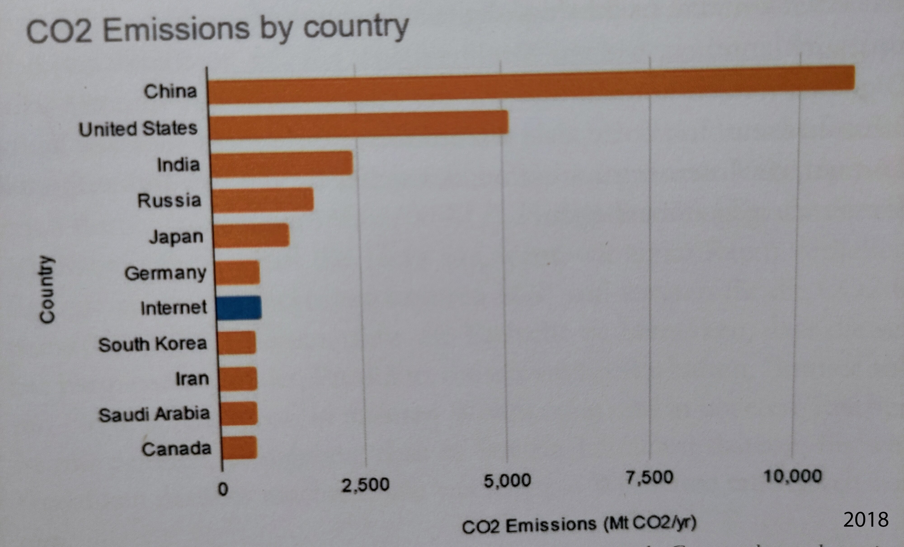
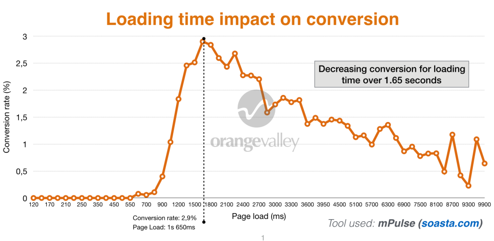
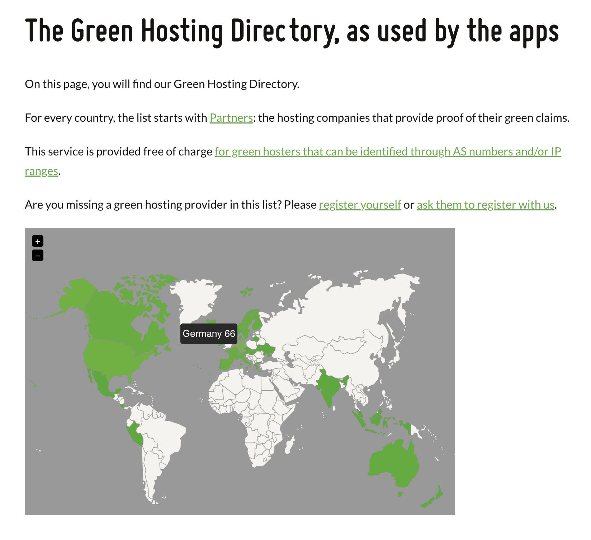

# Sustainable websites
Marcel Birkhahn
hello@marcelbirkhahn.com
## Why should we care about that?
### The early days
[The first website ever (1993)](http://info.cern.ch/hypertext/WWW/TheProject.html)
- just HTML - no external scripts (JS, CSS) or font files - no cookies - no image or video - 3.364 Byte - [no measureable emissions](https://www.websitecarbon.com/website/info-cern-ch-hypertext-www-theproject-html/)
### Today
<a href="https://de.statista.com/infografik/2425/das-passiert-in-einer-minute-im-internet/" target="_blank" title="Infografik: Das passiert im Internet in einer Minute | Statista"> <img src="https://cdn.statcdn.com/Infographic/images/normal/2425.jpeg" alt="Infografik: Das passiert im Internet in einer Minute | Statista" width="100%" height="auto" style="width: 100%; height: auto !important; max-width:500px;-ms-interpolation-mode: bicubic;"/> </a> <caption> <small>https://de.statista.com/infografik/2425/das-passiert-in-einer-minute-im-internet/</small> </caption>
### The issue
Power from fossil fuels = CO2 emissions
 <caption> <small>https://ourworldindata.org/grapher/electricity-prod-source-stacked (2022)</small> </caption>
1GB ≈ 360g CO2 emissions (worldwide)
 <caption> <small>Greenwood, Tom. "Nachhaltiges Webdesign." (2021)</small> </caption>
<img src="assets/images/carbon-footprint-of-the-internet-2021.png" alt="Carbon footprint of the internet 2021" width="100%" height="auto" style="width: 100%; height: auto !important; max-width:600px;-ms-interpolation-mode: bicubic;"/> <caption> <small>https://www.climateimpact.com/news-insights/insights/infographic-carbon-footprint-internet/ (2021)</small> </caption>
Just the begin of ... ... Autonomous driving, AI, Smarthome, Metaverse, Crypto, Blockchain ...
### Motivation
Save data and power to reduce CO2 emissions!
<img src="assets/images/book-and-candle.jpeg" alt="Book and candle" width="100%" height="auto" style="width: 100%; height: auto !important; max-width:600px;-ms-interpolation-mode: bicubic;"/>
 <caption> <small>https://cxl.com/blog/testing-tools-site-speed/ (2022)</small> </caption>
## How to measure it?
<a href="https://www.bmwk.de/" target="_blank" title="Bundesministerium für Wirtschaft und Klimaschutz"> <img src="https://www.bmwk.de/SiteGlobals/BMWI/StyleBundles/Bilder/bmwi_logo_de.svg?__blob=normal&v=17" alt="Bundesministerium für Wirtschaft und Klimaschutz" width="100%" height="auto" style="width: 100%; height: auto !important; max-width:400px;-ms-interpolation-mode: bicubic;"/> </a>
[Website Carbon Calculator](https://www.websitecarbon.com/website/bmwk-de-navigation-de-home-home-html/) (API available)
[Digital Beacon](https://digitalbeacon.co/report/bmwk-denavigationdehomehome-html) (browser extensions available)
[Ecograder](https://ecograder.com/report/Gs4kgaJK0d5YFhJswu3uxJlF)
[AWS Carbon Footprint Tool](https://aws.amazon.com/de/blogs/aws/new-customer-carbon-footprint-tool/)
[Are my third parties green?](https://aremythirdpartiesgreen.com/test/e768ea98ffb5489aabb44c66efb92f29)
### Others
- [Ryte](https://de.ryte.com/) - [Screaming Frog](https://www.screamingfrog.co.uk/) - [Google Search Console](https://search.google.com/search-console/about) - [Web Page Test](https://www.webpagetest.org/)
### Challenge
Which metric is the best?
## What can we do?
### 1. Reduction ### 2. Substitution ### 3. Compensation
### Dark Mode
Useful for OLED displays (saves energy up to 50%)
<pre><code data-trim data-noescape> @media (prefers-color-scheme: dark) { /* CSS Code wenn Dark Mode aktiv */ } </code></pre>
<picture> <source srcset="dark.png" media="(prefers-color-scheme: dark)"> <img src="light.png" alt=""> </picture>
<p class="ciu_embed" data-feature="prefers-color-scheme" data-periods="future_1,current,past_1,past_2" data-accessible-colours="false"> <picture> <source type="image/webp" srcset="https://caniuse.bitsofco.de/image/prefers-color-scheme.webp"> <source type="image/png" srcset="https://caniuse.bitsofco.de/image/prefers-color-scheme.png"> <img src="https://caniuse.bitsofco.de/image/prefers-color-scheme.jpg" alt="Data on support for the prefers-color-scheme feature across the major browsers from caniuse.com"> </picture> </p>
### CSS
Delete unused code and use optimizing for production of frameworks ([TailwindCSS](https://tailwindcss.com/docs/optimizing-for-production))
### Javascript
Delete unused code, use code splitting and dynamic imports ([Webpack](https://webpack.js.org/guides/code-splitting/))
### Templates and plugins
Choose data-saving, lean templates and deactivate unused plugins (Wordpress)
### Image sizes
Google Logo Example: (6 kb to 3,1 kb -> 2,9 kb * 6 billion ≈ 17,4 TB)
[tinypng.com](https://tinypng.com/) Web-Tool, API and Plugins.
### Image formats
<p class="ciu_embed" data-feature="webp" data-periods="future_1,current,past_1,past_2" data-accessible-colours="false"> <picture> <source type="image/webp" srcset="https://caniuse.bitsofco.de/image/webp.webp"> <source type="image/png" srcset="https://caniuse.bitsofco.de/image/webp.png"> <img src="https://caniuse.bitsofco.de/image/webp.jpg" alt="Data on support for the webp feature across the major browsers from caniuse.com"> </picture> </p>
- on average 25-34% smaller files than JPEG with the same or better quality - on average 26% smaller than a PNG and also the loading time is shorter - WebP 2: experimental successor of the WebP image format (Google)
### Other ideas?
- image toggle? - use of Content Delivery Network
### Green Hosting
[Green Web Check](https://www.thegreenwebfoundation.org/green-web-check/?url=https%3A%2F%2Fwww.bmwk.de%2FNavigation%2FDE%2FHome%2Fhome.html) (browser extensions available)
<a href="https://www.thegreenwebfoundation.org/directory/" target="_blank" title="Green Hosting Directory">  </a> <caption> <small>https://www.thegreenwebfoundation.org/directory/</small> </caption>
### Compensation
- Beware of green washing companies - calculate and balance yourself - klimapunkt.de for reforestation of German forests - 30 euros per tonne of CO2
- Greenwood, Tom. "Nachhaltiges Webdesign." (2021) - https://dr-beyer.de/ - https://www.sustainablewebmanifesto.com/ - https://www.youtube.com/watch?v=b6FNhMsZPWo - https://www.websiteboosting.com/magazin/75/nachhaltige-websites-wie-wir-alle-mehr-fuer-die-umwelt-tun-koennen.html - https://open.spotify.com/episode/2BBG7abY7770uPhjwxKCZI?si=60fec6460ffe4802